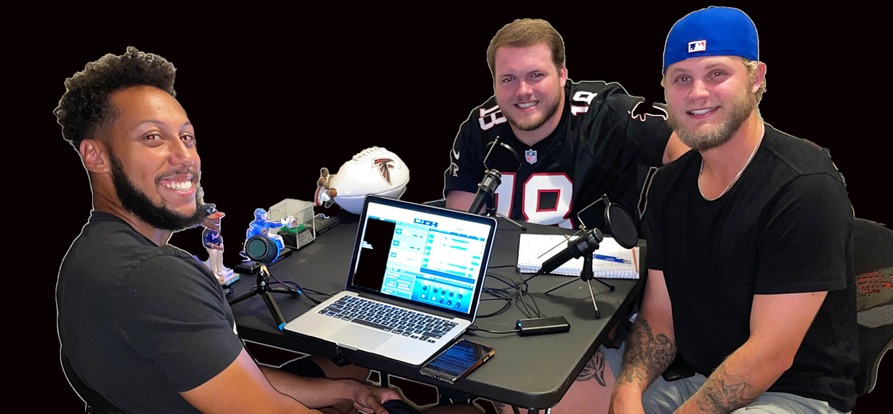
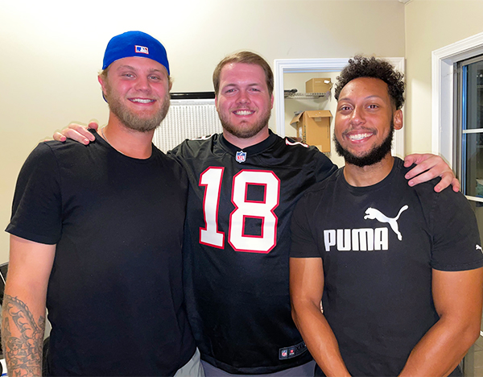

Bad Boys Fantasy Football Podcast
 About the Pod
The BadBoyz Fantasy Football Podcast began in 2019, the 2nd season of our league. We began the podcast as a way to keep the league more involved and active. Every Wednesday night, Hayden, Patrick and Logan would talk about the outcomes from the week prior, matchups for the upcoming week, and everything in between. The podcast became a great way to stir the pot. Sparking rivalries, talking trash, and just having fun. During the 2020 season, Logan moved to start his family and was replaced on the podcast by Grayson. This season, the podcast is evolving into a product to reach a larger audience, where we talk about fantasy football as a whole and not specifically our league. It is available to listen wherever you listen to your podcasts.